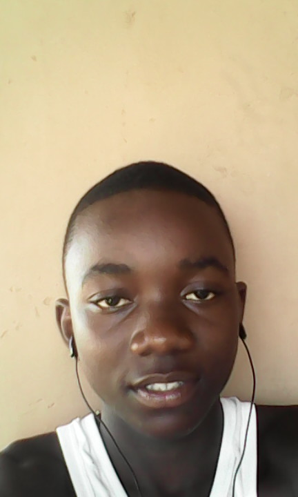
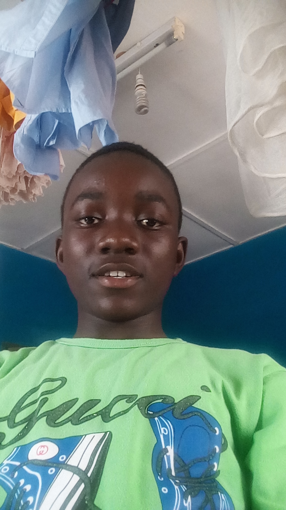
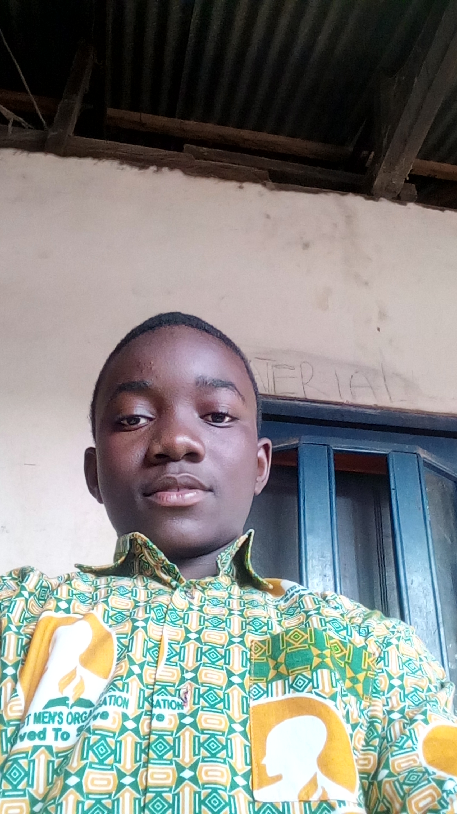
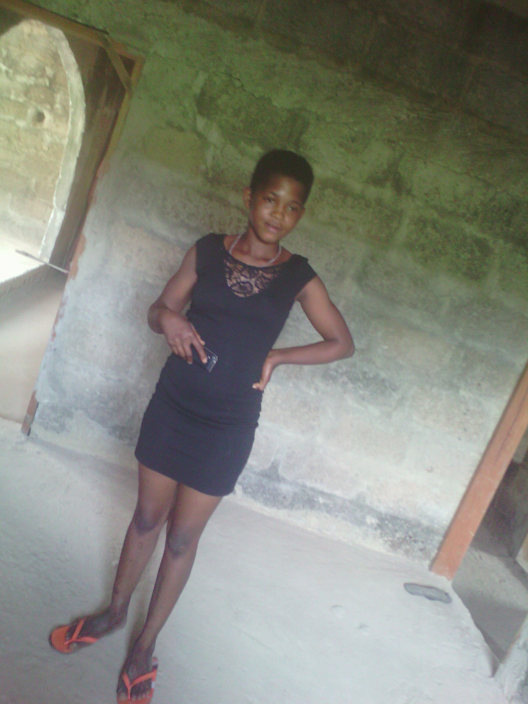

Sunday 26, 2020, time: 5:16am
I created this website during Covid-19 pandemic, 2020.
I created this when I was home due to Covid-19 Pandemic.
I created this website when my senoir brother has completed university(WINNEBA), and my senoir brother Kofi Adom at KNUST level 200. I created this website when I was in shs 1.
I'm Asumadu Kwabena Sakyi. I'm 17years when I created this website. I come from Asotwe, Ejisu Municipal. I'm the youngest brother among my two brothers, namely Kofi Adom and Frimpong Emmanuel.




That's my childhood photos
I dont wanna write more, so click the links below and watch videos or listening voice recordings...
The Girl I said I will MARRY!
Around october 25, 2020, I saw a girl who stays behind where I stay but she came to visit her sister. One day I saw her at her house and I look her for several times because she is very beautiful girl. It was hard to me to talk with her but one I go there and buy egg while I dont need the egg but I was using that strategy to talk to her. So after I finished buying the egg, I told her I will and pay her a visit after...
I immediately go there and we were talking. And I told her I want to date her but she didnt gave me any specific answer because she was in love with me already. So I became her dating partner. After some weeks, maybe two weeks then I have sex with her. This is how she was dressing before haveing sex...
The girl is Yaa but I dont know how to spell her name because she is a northner ( muslim). I have date more than 20 girls but this girl is the only girl that I like and I love most 100%. Even I become worried if I didnt hear her voice or didnt talk to her.
If I assume, she was 15 or 16 years girls and I was 17 years at that time. I dont know if I could marry the girl or not. My major purpose of loving the girl is, I want her to prove poverty wrong because I hope and believe that her family members including father, mother and brothers and sisters are poor.

Even though if I didnt marry this girl, I will try my best and make God help me to help the girl to be independent and prove poverty wrong and the last thing is Go to heaven!
It is my aim to help many people to be independent...
Even though I said I wanna marry the girl but on 15th december, 2020 when I came back home from my uncle's place, I heard that, the girl is cheating on me so the love I have for
increases more because I wanna the girl to be my wife. I asked if what they are saying is true, but she said it is not true but it was true. Even though she was cheating
on me but the love I have for her didn't decrease.
It is my aim to change my girlfriend's life. At that time, if I assumed I was dating three girls including my serious girl Yaa.